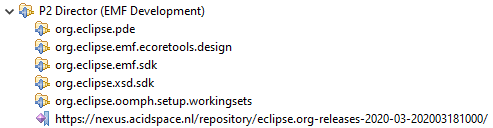
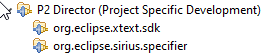
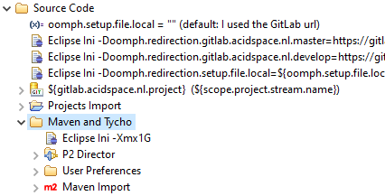
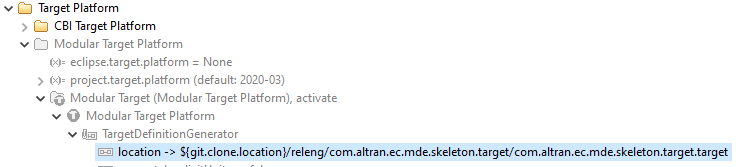
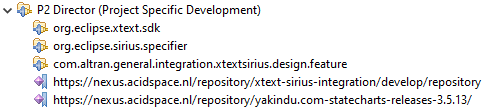
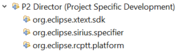

This document contains information about Altran’s EMF Reference Project (a.k.a. MDE Skeleton) MDE Asset. The purpose of this project is to represent a typical MDE Eclipse IDE solution and to act as a showcase on how to use MDE Assets.
| This developer guide can be downloaded as PDF |
Development Environment
Git workflow
| TODO explain Gitflow Workflow |
Initial Git directory structure
Prerequisites
As described in the previous section we tend to use the Git workflow branching model. In this model the central repo holds two main branches with an infinite lifetime:
-
master -
develop
Before creating an initial directory structure, please make sure that these branches are available in the remote repository and configured correctly, i.e., both protected and develop marked as the default branch.
|
Bootstrapping a git repository
When the prerequisites are met, you can start with bootstrapping the repository with its initial content. The EMF Reference Project provides a script that provisions the repository with the correct directory structure and content to build an empty Eclipse RCP application that can be used for further development. The bootstrapped application will contain a developer documentation plugin that provides the instructions on setting up a development environment.
The listing below shows how to use the EMF Reference Project bootstrap script.
In this example, the LArch repository is used as an example and the callouts below the listing explain the steps in more detail.
user@machine MINGW64 ~/git
$ git clone git@gitlab.acidspace.nl:cge-coe-mde/larch.git (1)
Cloning into 'larch'...
remote: Enumerating objects: 3, done.
remote: Counting objects: 100% (3/3), done.
remote: Compressing objects: 100% (2/2), done.
remote: Total 3 (delta 0), reused 0 (delta 0), pack-reused 0
Receiving objects: 100% (3/3), done.
user@machine MINGW64 ~/git
$ git clone git@gitlab.acidspace.nl:cge-coe-mde/mde-skeleton.git -b BOOTSTRAP-2020-06 (2)
Cloning into 'mde-skeleton'...
remote: Enumerating objects: 1407, done.
remote: Counting objects: 100% (50/50), done.
remote: Compressing objects: 100% (37/37), done.
remote: Total 1407 (delta 16), reused 33 (delta 9), pack-reused 1357
Receiving objects: 100% (1407/1407), 902.82 KiB | 1.45 MiB/s, done.
Resolving deltas: 100% (631/631), done.
Note: switching to '5c0c33b3e79fb107b4f582ebaf2d28d5fbf980a1'.
You are in 'detached HEAD' state. You can look around, make experimental
changes and commit them, and you can discard any commits you make in this
state without impacting any branches by switching back to a branch.
If you want to create a new branch to retain commits you create, you may
do so (now or later) by using -c with the switch command. Example:
git switch -c <new-branch-name>
Or undo this operation with:
git switch -
Turn off this advice by setting config variable advice.detachedHead to false
user@machine MINGW64 ~/git
$ ./mde-skeleton/bootstrap.sh LArch nl.cge.mde.larch larch/ (3)
Bootstrapping the LArch project with prefix nl.cge.mde.larch in: /c/Users/user/git/larch
Processing file /c/Users/user/git/larch/.acidcli.yml
...
Committing changes
warning: LF will be replaced by CRLF in README.adoc.
The file will have its original line endings in your working directory
...
[develop eeff333] Bootstrapped the LArch project, using the skeleton as provided by Capgemini Engineering.
61 files changed, 2717 insertions(+), 92 deletions(-)
create mode 100644 .acidcli.yml
...
Done, please review the last commit and push it to ACIDSpace using the following commands: (4)
> cd /c/Users/user/git/larch
> git status
> git push
Then read the README.adoc to learn how to setup a development environment or how to build the code locally, see
https://gitlab.acidspace.nl/cge-coe-mde/larch/-/blob/develop/README.adoc
After a successful local build, the built products can be found at:
/c/Users/user/git/larch/products/nl.cge.mde.larch.package.product/target/products| 1 | Clone the empty git repository that will be bootstrapped.
It is assumed that the develop branch is set as default branch of the repository.
In this example, the repository is cloned into a sub-directory called larch. |
| 2 | Clone the MDE skeleton repository to download the bootstrap script.
The tag, i.e., -b BOOTSTRAP-2020-06, specifies the version of Eclipse that is used for the RCP.
For a list of available versions, please see the available tags.
The repository is cloned into a sub-directory called mde-skeleton. |
| 3 | Running the bootstrap.sh copies all required data to the target repository and adapts it for your project.
The script takes 3 parameters:
|
| 4 | When the script is done, a commit has been created such that it can be pushed. When the commit is pushed, the product is built automatically in ACIDSpace and both the README of the repository and its Gitlab pages will contain information on how to setup an Eclipse development environment. The output of the script provides pointers on how to manually build your product on your local system from the command line, please read section Build code with Maven before running a command line build. |
The directory structure of the target repository will look like:
| Directory | Description |
|---|---|
.mvn |
Contains Maven configuration |
.settings |
Contains Eclipse configuration |
documentation |
This directory contains all bundles with documentation about the product and/or project. |
documentation/<prefix>.guide.developer |
The generated developer guide is available as PDF, Eclipse Help and via the GitLab pages of your project. |
features |
This directory contains all features that are provided by the project. |
plugins |
This directory contains all plugins that are provided by the project, initially empty. |
products |
This directory contains the configuration of the built Eclipse RCP. |
products/<prefix>.package.branding |
Defines the look-and-feel of the product, like splash screen and about content. |
products/<prefix>.package.feature |
Defines the content of the RCP, typically all features in the |
products/<prefix>.package.product |
Defines the product and the layour of the P2 repository. |
releng |
This directory contains artifacts that are related to release-engineering. |
releng/eclipse |
Contains pre-configured Eclipse launch targets and Oomph setup file |
releng/<prefix>.parent |
The Maven parent pom defines the configuration for this project. |
releng/<prefix>.target |
The target platform manages the used 3rd party dependecies of the project. |
tests |
This directory contains all tests that are provided by the project, initially empty. |
How to create an Oomph setup file
This section describes the typical steps to take for creating an Oomph setup file for a project. An Oomph setup file enables the Eclipse Installer to automate the installation of Eclipse development environments. For more generic information on (authoring) Oomph, please read the Eclipse Oomph Authoring Wiki
If you have used the bootstrap.sh script when creating your repository, the releng/eclipse directory will already contain a setup file and a lot of the steps below will already have been performed.
It is still wise to review the generated setup file using the steps below.
|
The easiest way to create an Oomph setup file is to either use the bootstrap.sh script (for a new git repository) or download the setup file of this MDE Skeleton and use it as a base.
The downloaded setup file should be renamed to <project_name>ACIDSpace.setup and it is recommended to save it in the releng/eclipse directory in your git repository, also see the Initial Git directory structure.
After opening the setup file in Eclipse, the model tree looks like:
Please perform the following steps to tailor the setup file for your project:
| If the Properties view is not yet visible, open it using the context menu on one of the tree nodes Show Properties View |
-
Select the
MDE Assets - MDE Skeletonnode and modify its properties in the Properties View-
Name:acidspace.<gitlab_project_name> -
Label:<project_name> -
Description:<project_description>
-
-
Modify the
Valueproperty ofgitlab.acidspace.nl.projectto the relative path of your project in ACIDSpace GitLab. -
Modify the
Valueproperty ofoomph.setup.file.pathtoreleng/eclipse/<project_name>ACIDSpace.setup. -
The last two tree nodes specify the streams (i.e. branches) for which a development environment can be set up. All nodes in the tree can also be moved within a stream node allowing different configurations per stream. Typically the
masteranddevelopstreams are defined, allowing customizations in the development environment on the develop branch without impacting the master release branch.
Please note that developing on another branch (e.g. a feature branch) is supported, just Checkout another branch. -
Expand the
P2 Director (EMF Development)node-
The common requirements for EMF development are contained in this subtree. The last node specifies the ACIDSpace proxy location for the required Eclipse version. Please review the Eclipse version and adapt the url if applicable.
-
-
Expand the
P2 Director (Project Specific Development)node-
The MDE Skeleton adds e.g. Xtext and Sirius as additional requirements. Please add all requirements for the development environment for your project to this section. Optionally you can also add additional repositories that provide your required artifacts.
Opening the Repository Explorerview by means of the context menu Explore on a repository node, allows you to easily drag and drop your requirements in the tree.
-
-
Expand the
Source Codenode-
Most items are preconfigured and do not need attention bu if your project does not support Maven and Tycho, please disable the
Maven and Tychonode by means of its context menu Disabled
-
-
Expand the
Target Platformnode-
We support two ways for Specifying an Eclipse target platform. Please read the section and enable the node for the chosen solution.
-
If you choose to use a
Modular Target Platform, please update thelocationof theTargetDefinitionGeneratorto the correct location in your git repository. The content of the target platform can be authored within the sub tree of theModular Target Platformnode.
-
| Whenever the Oomph setup file is modified, an Eclipse Oomph refresh is required to apply the changes to the current workspace, use the menu . |
How to setup a development environment
To start developing for MDE Skeleton, please perform the following steps:
-
Start with downloading the
Eclipse Installerfrom:
https://www.eclipse.org/downloads/packages/installer -
Start the
Eclipse Installer -
Select the
advanced mode
-
On the Product Page
-
Select
Eclipse Platform -
Product Version:
2022-12 -
Click Next >
-
-
On the Projects Page
-
(One time only) Click the
 icon to add the MDE Skeleton project.
icon to add the MDE Skeleton project.-
Catalog:
Eclipse Projects -
Resource URIs:
https://raw.githubusercontent.com/altran-mde/mde-skeleton/refs/heads/develop/releng/eclipse/MDESkeletonGitHub.setup -
Click OK
Though using the Resource URI above is preferred, it is known that for some users the URI didn’t work and they got an error: The URI … does not contain a valid product. In this case the setup file can also be downloaded and added by clicking Browse File System…. -
Enter your GitLab credentials when asked for
-
-
Select
MDE Skeletonin the tree -
Select stream
developin the table -
Click Next >
-
-
On the Variables Page
-
Review all variables values, especially the
Installation folder nameandRoot install folder -
Click Next >
-
-
On the Confirmation Page
-
Click Finish
-
Your development environment will now be prepared. Please accept all licenses and certificates and provide your GitLab credentials when asked for.
Build code with Maven
Please perform the steps in this section if you want to build your code using Maven on your local system. The code can built using Maven from either the command line or from within Eclipse, please read the "Use" items of the Maven documentation before running Maven the first time.
In our CI/CD the credentials of a project are stored in the TECHNICAL_USER and TECHNICAL_PASSWORD environment variables.
In order to be able to use the Maven settings.xml both in CI/CD and on your local system, you should also set these environment variables on your local system.
It is strongly advised to store an encrypted password in the TECHNICAL_PASSWORD environment variable for security reasons.
Maven supports server password encryption, see https://maven.apache.org/guides/mini/guide-encryption.html.
|
The releng/eclipse directory contains pre-configured Eclipse launch targets to build your code using Maven from within Eclipse.
The root Maven pom.xml for the MDE Skeleton project is located in the root of the local git repository.
Just open a command line at that location and type the following command to build the code:
$ mvn clean verify -s settings.xmlCheckout another branch
Typically you will develop your feature in a feature branch.
To start working on a feature, start by creating an issue in GitLab.
From the issue, a feature branch can be created using the GitLab web UI.
Make sure to prefix you branch name with feature/.
When the feature branch is created, you can continue with fetching the new branch in your Eclipse development environment, see Fetching from upstream. Then continue by switching to the new branch, see Checking out an existing Branch
| Whenever you switch to an existing branch, it is strongly advised to perform an Eclipse Oomph refresh by using the menu . This ensures that your development environment is reconfigured to match the requirements for that branch. |
Using third-party products (3PP)
Developing an Eclipse (e.g. EMF) based solution typically requires third-party products (3PP) that need to be downloaded from remote repositories. The stability and availability of these remote repositories is often not guaranteed. For this reason it is recommended to use a proxy server, e.g. a Nexus or Artifactory.
Please note that these proxies might not be accessible by our clients nor by the users of our clients' solutions. Therefore we should be aware that though these proxies should be configured in our development environments (i.e. Eclipse and CI/CD), our built solutions should depend on publicly available repositories. The sources of some of our solutions (i.e. MDE Assets) are hosted both in our intranet as in a public GitHub. For these solutions, it is important that they can benefit from the proxy within the intranet without modifying the sources, meaning that the proxies should be an additional configuration.
This section describes the best practices on how to configure the usage of proxy servers in the development environment our Eclipse solutions. The following assumptions are considered when using proxies:
-
The built Eclipse solution should be configured to use the publicly available repositories, and should have no dependencies on ACIDSpace (unless decided differently).
The Target Platform defines what your project will be built and launched against. See the best practices for Specifying an Eclipse target platform. -
Eclipse Oomph is used for setting up a development environment.
As development is typically done in the intranet, it is recommended that the Oomph setup files refer to the proxies. -
When building the solution in CI/CD it is recommended to use the proxies.
Our solutions are typically build using Maven, which can be configured with mirrors that reroute the public repository urls to their proxy equivalents. Section Using repository mirrors in Maven explains how to configure Maven.
Specifying an Eclipse target platform
| For more detailed information on Eclipse target platforms, see https://wiki.eclipse.org/PDE/Target_Definitions |
The Target Platform defines what your project will be built and launched against. We typically use Eclipse Oomph to setup an development environment. Within our Oomph setup file, two ways of specifying a target platform are supported, either by use of Oomph Targlets or by using the Eclipse CBI target platform definition DSL.
| If your target platform contains repositories that require authentication, the Eclipse CBI target platform definition DSL should be used. |
Using the Eclipse CBI target platform definition DSL is preferred.
The DSL comes with an integrated Eclipse editor to author target platform files with a tpd file extension.
Specifying the Eclipse CBI target-platform.tpd shows how configure the target platform for both an public repository and a proxy repository that is hosted on the intranet.
For more information on authoring Eclipse CBI tpd files, see https://github.com/eclipse-cbi/targetplatform-dsl#readme
|
target "CBI Target Platform"
with configurePhase source requirements
location "https://download.eclipse.org/releases/2022-12/202212071000" { (1)
// Eclipse - EMF
org.eclipse.sdk.feature.group lazy
org.eclipse.emf.sdk.feature.group lazy
}
location "https://altran-mde.github.io/espilce-commons-staging/" espilce-commons-p2 { (2)
org.espilce.commons.emf.registry.feature.feature.group lazy
org.espilce.commons.resource.feature.feature.group lazy
}| 1 | Public repository - Preferably, the built Eclipse solution should be configured to use publicly available repositories. |
| 2 | ACIDSpace repository - If and only if an artifact is available within ACIDSpace only, we need to specify the ACIDSpace repository url.
Repositories that are hosted by ACIDSpace typically require authentication.
Specifying a repository id (i.e. espilce-commons-p2) allows you to configure the credentials in the Maven settings file as described in Using repository mirrors in Maven. |
Whenever an Eclipse CBI tpd file is updated, its target platform should be regenerated by means of the context menu Create TargetDefinition File on the tpd file.
When that is done, the generated target file should be activated by means of an Eclipse Oomph refresh, using the menu
|
Using repository mirrors in Maven
You may want to use an alternative mirror for a particular repository without changing the project files. Some reasons to use a mirror are:
-
There is a synchronized mirror on the internet that is geographically closer and faster
-
You want to replace a particular repository with your own internal repository which you have greater control over
-
You want to run a repository manager to provide a local cache to a mirror and need to use its URL instead
| For more detailed information on using mirrors for repositories in Maven, see https://maven.apache.org/guides/mini/guide-mirror-settings.html |
Defining mirrors in settings.xml shows how to configure Maven to use repository proxies instead of the public repositories. In this example both the Maven central as the Eclipse 2022-12 P2 repositories are rerouted to repository proxies.
<settings xmlns="http://maven.apache.org/SETTINGS/1.1.0" xmlns:xsi="http://www.w3.org/2001/XMLSchema-instance"
xsi:schemaLocation="http://maven.apache.org/SETTINGS/1.1.0
http://maven.apache.org/xsd/settings-1.1.0.xsd">
<mirrors>
<!-- Maven mirrors -->
<mirror>
<id>mde-assets-maven-central</id>
<name>Maven Central Proxy</name>
<url>https://nexus.acidspace.nl/repository/mde-assets/</url>
<mirrorOf>central</mirrorOf> (1)
</mirror>
<!-- P2 target platform mirrors -->
<mirror>
<url>https://nexus.intranet.company/repository/eclipse.org-releases-2022-12-202212071000</url>
<mirrorOf>https://download.eclipse.org/releases/2022-12/202212071000</mirrorOf> (2)
<mirrorOfLayouts>p2</mirrorOfLayouts>
<layout>p2</layout>
</mirror>
</mirrors>
<servers>
<!-- Maven mirrors -->
<server>
<id>mde-assets-maven-central</id> (3)
<configuration>
<timeout>10000</timeout>
</configuration>
<username>${env.TECHNICAL_USER}</username> (4)
<password>${env.TECHNICAL_PASSWORD}</password>
</server>
<!-- Intranet servers in target platform -->
<server>
<id>espilce-commons-p2</id> (5)
<configuration>
<timeout>10000</timeout>
</configuration>
<username>${env.TECHNICAL_USER}</username>
<password>${env.TECHNICAL_PASSWORD}</password>
</server>
</servers>
</settings>| 1 | Maven repository mirror - For Maven repository mirrors, the <mirrorOf> specifies the ID of the repository you are using a mirror of and the <url> specifies the location of the mirror, i.e. the proxy.If a mirror requires authentication, a <server> section also needs to be configured. |
| 2 | Eclipse P2 repository mirror - The <layout> specifies a mirror of an Eclipse P2 repository.
In this layout, the <mirrorOf> specifies the url prefix of the repository to mirror. |
| 3 | Additional configuration for mirrors (Optional) - If a mirror requires authentication, a <server> section also needs to be configured.
The <id> specifies the id of the server (i.e. mirror) for which these settings are applicable. |
| 4 | Credentials - In CI/CD the credentials of a project can be stored in environment variables like TECHNICAL_USER and TECHNICAL_PASSWORD.
If a server requires authentication, the credentials can be specified using these environment variables.
Please read section Build code with Maven on how to setup a local machine for using Maven. |
| 5 | Intranet repositories - When using proprietary artifacts that are developed and published in intranet only, authentication is required to download the artifacts.
The <id> of the server should match the id as specified in the target platform, for more information see Specifying an Eclipse target platform. |
Bundling a JRE with your RCP
If your solution builds an Eclipse (RCP) application, you can make this application even more portable by including a Java™ JRE that is used to run the Eclipse application. This technique saves the user the troubles of installing a JRE themselves or having a JRE installed that is not compatible with your Eclipse application. Eclipse JustJ provides fully-functional Java™ runtimes that can be redistributed by Eclipse Projects. This section describes how such an Eclipse JustJ JRE is bundled with the MDE Skeleton.
If you have used the bootstrap.sh script with a BOOTSTRAP-nnnn-nn-JREnn tag to bootstrap your repository, the steps in this section already have been performed.
As such, you can also learn how to e.g. configure an Eclipse JustJ JRE17 in combination with Tycho 2.6.0 at tag BOOTSTRAP-2022-12-JRE17.
|
Start with Specifying an Eclipse target platform for Eclipse JustJ, see the code snippet below. Please note that Eclipse JustJ provides different download locations for different JRE versions, see https://download.eclipse.org/justj/jres/ for more information.
| When using Maven, don’t forget to configure an Eclipse P2 repository mirror for this repository as described in Using repository mirrors in Maven, also see settings.xml |
location "https://download.eclipse.org/justj/jres/17/updates/release" {
org.eclipse.justj.openjdk.hotspot.jre.full.feature.group lazy
}Now you can simply bundle the Eclipse JustJ JRE by adding it as a dependency in the packaging feature of your Eclipse (RCP) application, see the code snippet below.
<feature
id="com.altran.ec.mde.skeleton.package.feature"
label="EMF Reference Project - Packaging Feature"
version="0.0.1.qualifier"
provider-name="Capgemini Engineering"
plugin="com.altran.ec.mde.skeleton.package.branding">
<includes
id="com.altran.ec.mde.skeleton.feature"
version="0.0.0"/>
<requires>
<import feature="org.eclipse.platform" version="4.26" match="greaterOrEqual"/>
<import feature="org.eclipse.justj.openjdk.hotspot.jre.full" version="11" match="greaterOrEqual"/> (1)
<import feature="org.eclipse.jdt" version="3.18" match="greaterOrEqual"/>
</requires>
<plugin
id="com.altran.ec.mde.skeleton.package.branding"
download-size="0"
install-size="0"
version="0.0.0"/>
<plugin
id="org.slf4j.binding.log4j12"
download-size="0"
install-size="0"
version="0.0.0"
fragment="true"
unpack="false"/>
<plugin
id="com.altran.ec.mde.skeleton.logging"
download-size="0"
install-size="0"
version="0.0.0"
fragment="true"/>
</feature>| 1 | This line adds the Eclipse JustJ JRE as a dependency to your Eclipse application. |
When using Maven, its target platform configuration must be updated in the parent pom, see the code snippet below. The configuration in the example is specifically for use with Tycho 1.7.0. For newer versions of Tycho this configuration is even easier, please read the Eclipse JustJ documentation.
For Maven it is very important that the Eclipse product file of your application (i.e. eclipse.product) does not specify an execution environment.
Otherwise the Eclipse JustJ JRE jars will be published to your update site, which is undesirable.
Please ensure that the <vm></vm> section is empty in your eclipse.product file.
|
<project xmlns="http://maven.apache.org/POM/4.0.0"
xmlns:xsi="http://www.w3.org/2001/XMLSchema-instance"
xsi:schemaLocation="http://maven.apache.org/POM/4.0.0 http://maven.apache.org/xsd/maven-4.0.0.xsd">
<modelVersion>4.0.0</modelVersion>
<artifactId>com.altran.ec.mde.skeleton.parent</artifactId>
<name>EMF Reference Project - Tycho Parent</name>
<build>
<plugins>
<plugin>
<groupId>org.eclipse.tycho</groupId>
<artifactId>target-platform-configuration</artifactId>
<configuration>
<!-- Eclipse JustJ configuration for Maven Tycho 2.6 -->
<!-- See https://www.eclipse.org/justj/?page=documentation -->
<executionEnvironment>org.eclipse.justj.openjdk.hotspot.jre.full-17</executionEnvironment>
</configuration>
</plugin>
</plugins>
</build>
</project>Using MDE Assets
This section acts as a quick reference guide on using MDE Assets in an MDE solution. The focus is mainly on the integration part and for more information on the usage of an particular MDE Asset, please read its user, developer or programmer guide.
| For an MDE solution, an MDE Asset is a third-party-product and as such the general guidelines as documented in Using third-party products (3PP) should be followed when using an MDE Asset. |
EcoreDoc
EcoreDoc generates AsciiDoctor files to document Ecore metamodels, similar to JavaDoc. AsciiDoctor can be rendered as HTML, PDF, or Eclipse Help. EcoreDoc can be used as Maven Plugin, standalone command-line tool, Java API, or Eclipse Plug-in.
In this quick reference guide EcoreDoc is used by means of its Maven plugin to generate Fowler Statemachine EcoreDoc from the Statemachine.ecore file.
The EcoreDoc Maven plugin can be used by adding the code snippet below to your Maven pom file.
<pluginRepositories>
<!-- com.altran.general.emf.ecoredoc:ecoredoc-maven-plugin -->
<pluginRepository> (1)
<id>ecoredoc-snapshots</id>
<url>https://altran-mde.github.io/ecore_doc/maven-repo</url>
<releases>
<enabled>false</enabled>
</releases>
<snapshots>
<enabled>true</enabled>
</snapshots>
</pluginRepository>
</pluginRepositories>
<build>
<plugins>
<plugin>
<groupId>com.altran.general.emf.ecoredoc</groupId>
<artifactId>ecoredoc-maven-plugin</artifactId>
<version>0.10.0-SNAPSHOT</version>
<executions>
<execution>
<phase>generate-sources</phase> (2)
<goals>
<goal>ecoredoc</goal>
</goals>
<configuration>
<resolve>true</resolve>
<config> (3)
<renderDefaults>false</renderDefaults>
<renderDiagrams>true</renderDiagrams>
<diagramsOutputPath>images</diagramsOutputPath>
<diagramsOutputFormat>png</diagramsOutputFormat>
</config>
<inputFiles>
<inputFile>../../plugins/org.eclipse.xtext.example.fowlerdsl/model/generated/Statemachine.ecore</inputFile>
</inputFiles>
<outputFile>${project.build.directory}/adoc-gen/Statemachine.adoc</outputFile>
</configuration>
</execution>
</executions>
</plugin>| 1 | The EcoreDoc maven plugin is deployed in its Maven repository in GitHub. |
| 2 | Binds the ecoredoc goal to the generate-sources Maven build lifecycle phase. |
| 3 | The EcoreDoc Maven plugin can be configured by means of annotations in the ecore model or, as illustrated here,directly in the Maven pom file. |
The example below adds the generated EcoreDoc to this developer guide as an appendix.
ifndef::gendocdir[:gendocdir: {basedir}/target/adoc-gen]
[appendix]
== Fowler Statemachine EcoreDoc
include::{gendocdir}/Statemachine.adoc[lines=36..]For more information on using EcoreDoc, please read the EcoreDoc user guide.
Espilce Periksa
Espilce Periksa is an EMF Validator framework. To start using Espilce Periksa, first it should be added to the the target platform, see the code snippet below.
location "https://altran-mde.github.io/espilce-periksa/2.1/repository/" {
org.espilce.periksa.sdk.feature.group lazy
}Then you can start writing the required validations.
The quickest way to create validations using Espilce Periksa is to create a class containing static methods that are annotated with the @Check annotation.
The first argument of the method is the model element to validate and the second argument injects the validation context as provided by Espilce Periksa.
The example below adds a duplicate value error-validation for command names to the Fowler state-machine DSL Xtext example, and an info-validation for state names to start with a capital.
Using the @Check annotation requires a bundle dependency of org.espilce.periksa.validation.
|
public class StatemachineValidations {
/**
* The {@link Check @Check} annotation registers this method to validate all
* instances of {@link Statemachine}. For each <code>statemachine</code> this
* method is invoked.
*
* @param statemachine the state machine instance to validate
* @param ctx the check context used to report validation results
*/
@Check (1)
public static void checkDuplicates(Statemachine statemachine, CheckContext context) {
ValidationLibrary.checkDuplicateValue(statemachine.getCommands(), StatemachinePackage.Literals.COMMAND__NAME, context); (2)
// See java source for more validations...
}
@Check
public static void checkNameStartsWithCapital(State state, CheckContext context) {
if (!state.getName().isEmpty() && state.getName().charAt(0) != Character.toUpperCase(state.getName().charAt(0))) {
context.getReport().info("Name should start with upper case", StatemachinePackage.Literals.STATE__NAME); (3)
}
}
}| 1 | The @Check annotation registers the method to validate all instances of Statemachine as per the first argument of the method. The method is invoked for each statemachine instance in the model. |
| 2 | Espilce Periksa provides a ValidationLibrary containing reusable validations, e.g. validating duplicates in feature values. |
| 3 | The API of Espilce Periksa allows to easily report an info, warning or error. |
Finally you need to register your model validations, such that they will be automatically invoked as part of validating each applicable model instance. The easiest way to do this is by means of an extension point that is provided by Espilce Periksa, as per the example below.
<?xml version="1.0" encoding="UTF-8"?>
<?eclipse version="3.4"?>
<plugin>
<extension
point="org.espilce.periksa.validation.registry.registrar">
<ReflectiveValidator
class="com.altran.ec.mde.skeleton.espilce.periksa.StatemachineValidations">
<EPackage
uri="http://www.eclipse.org/xtext/example/fowlerdsl/Statemachine">
</EPackage>
</ReflectiveValidator>
</extension>
</plugin>For more information on using Espilce Periksa, please read the Espilce Periksa programmer guide.
Espilce Polvi
Espilce Polvi provides a framework and utilities to implement model-to-text generators. To start using Espilce Polvi, first it should be added to the the target platform, see the code snippet below.
location "https://altran-mde.github.io/espilce-polvi/1.1/repository/" {
// Runtime EMF integration
org.espilce.polvi.emf.generator.feature.feature.group lazy
// Runtime Xtext integration
org.espilce.polvi.emf.generator.xtext.feature.feature.group lazy
// MWE2 workflow generator fragment
org.espilce.polvi.xtext.generator lazy
}Creating an Espilce Polvi based model-to-text generator
In our MDE skeleton, the Xtext state-machine example already includes a Java code generator that is implemented using the API of Xtext. We want to use Espilce Polvi though, as it will support integrations with other frameworks and include additional features in the future. The API of Espilce Polvi is based on the Xtext API and as such migrating an Xtext based generator to a Polvi based generator is trivial:
-
Espilce Polvi comes with an Xtext generator fragment that eases the integration. To use this generator fragment, first a dependency on
org.espilce.polvi.xtext.generatorneeds to be added to theadditional.bundlesinbuild.propertiesListing 13. Adding an Xtext generator fragment dependency in build.propertiesadditional.bundles = org.eclipse.xtext.xbase,\ org.eclipse.xtext.common.types,\ org.eclipse.xtext.xtext.generator,\ org.eclipse.emf.codegen.ecore,\ org.eclipse.emf.mwe.utils,\ org.eclipse.emf.mwe2.launch,\ org.eclipse.emf.mwe2.lib,\ org.objectweb.asm,\ org.apache.commons.logging,\ org.apache.log4j,\ org.espilce.polvi.xtext.generator -
Now the mwe2 workflow can be modified to generate a Polvi based generator skeleton, just change the type of the
generatortoorg.espilce.polvi.xtext.generator.PolviGeneratorFragmentListing 14. Generating an Espilce Polvi generator skeleton in GenerateStatemachine.mwe2language = StandardLanguage { name = "org.eclipse.xtext.example.fowlerdsl.Statemachine" fileExtensions = "statemachine" generator = org.espilce.polvi.xtext.generator.PolviGeneratorFragment { generateXtendStub = true } -
After running the mwe2 workflow a new code generator skeleton is generated, see StatemachinePolviGenerator.xtend. By default some commented code is generated, but in our class we only needed to copy the contents of the original Xtext example based code generator and added some imports to the meta-model classes.
Invoking an Espilce Polvi based model-to-text generator
The example below shows how to use Espilce Polvi to invoke a Java code generator.
private static void generateCode(IFile inputIFile, IProgressMonitor monitor) throws CoreException {
SubMonitor subMonitor = SubMonitor.convert(monitor, "Starting code generation...", 101);
// Load input
ResourceSet resourceSet = new ResourceSetImpl();
URI inputlURI = URI.createPlatformResourceURI(inputIFile.getFullPath().toString(), true);
Resource inputResource = resourceSet.getResource(inputlURI, true);
// Configure Polvi
URIBasedFileSystemAccess fsa = new URIBasedFileSystemAccess(); (1)
IFolder outputFolder = inputIFile.getProject().getFolder("src-gen");
fsa.setOutputPath(outputFolder.getFullPath().toString()); (2)
GeneratorContext ctx = new GeneratorContext(new ProgressMonitorAdapter(subMonitor.split(100)));
// Generate output
StatemachinePolviGenerator generator = new StatemachinePolviGenerator(); (3)
generator.doGenerate(inputResource, fsa, ctx); (4)
// Refresh the output folder to detect the generated files
outputFolder.refreshLocal(IResource.DEPTH_INFINITE, subMonitor.split(1));
}| 1 | URIBasedFileSystemAccess is used because an EMF URI is used as input in this case.
Esplice Polvi also provides JavaIoFileSystemAccess for java.io.File input and InMemoryFileSystemAccess for in-memory output. |
||
| 2 | Specifies the output location were generated files are saved. | ||
| 3 | The contents of the file are generated in the StatemachinePolviGenerator#toJavaCode(Statemachine) method.
|
||
| 4 | The file is generated using the URIBasedFileSystemAccess instance that is created in step 1. |
Xtext/Sirius Integration
This asset enables Xtext editors to be used as direct editor for Sirius diagram elements or Sirius property widgets.
To start using Xtext/Sirius Integration, first it should be added to the the target platform, see the code snippet below.
location "https://altran-mde.github.io/xtext-sirius-integration.io/p2/1.1/" {
com.altran.general.integration.xtextsirius.runtime.feature.feature.group lazy
}Xtext/Sirius Integration also needs a feature from Yakindu Statecharts to be added to the target platform, see the code snippet below.
location "https://updates.yakindu.org/statecharts/releases/3.5.13" {
org.yakindu.base.xtext.utils.jface.feature.group lazy
}Because Xtext/Sirius Integration also provides development tools that need to be installed in Eclipse, the Oomph setup file needs to be updated. Open the setup file in Eclipse and perform the following steps:
-
Expand the
P2 Director (Project Specific Development)node -
Add a new
Requirementfor the Xtext/Sirius Integration design feature. Also add aRepositorythat contains the feature.
Because the feature depends on a feature from Yakindu Statecharts, theRepositorythat contains it must be added too:
Now you can start using Xtext/Sirius Integration. The MDE skeleton already provides an example Xtext/Sirius direct edit descriptor in statemachine.odesign:
This descriptor makes it possible to use Xtext editing of Transition labels.
In the properties of the descriptor the Mapping must to be set to the feature that the editor will be applied to.
The Injector Id refers to the Xtext language injector that is specified in plugin.xml to access the Xtext language, see the code snippet below.
<extension point="com.altran.general.integration.xtextsirius.runtime.xtextLanguageInjector">
<injector
id="com.altran.ec.mde.skeleton.xtext.sirius.integration.FowlerdslLanguageInjector"
class= "com.altran.ec.mde.skeleton.xtext.sirius.integration.FowlerdslLanguageInjector"/> (1)
</extension>| 1 | The class attribute of the injector refers to the implementation of the IXtextLanguageInjector interface that must
be added to access the Xtext language, see the code snippet below. |
package com.altran.ec.mde.skeleton.xtext.sirius.integration;
import org.eclipse.xtext.example.fowlerdsl.ui.internal.FowlerdslActivator;
import com.altran.general.integration.xtextsirius.runtime.IXtextLanguageInjector;
import com.google.inject.Injector;
public class FowlerdslLanguageInjector implements IXtextLanguageInjector {
@Override
public Injector getInjector() {
return FowlerdslActivator.getInstance()
.getInjector(FowlerdslActivator.ORG_ECLIPSE_XTEXT_EXAMPLE_FOWLERDSL_STATEMACHINE);
}
}For more information on using Xtext/Sirius Integration, please read the Xtext/Sirius Integration User Guide.
Xtext Move Refactoring
This asset enables generic move refactoring for Xtext, updating all references in the workspace.
To start using Xtext Move Refactoring, first it should be added to the the target platform, see the code snippet below.
location "https://altran-mde.github.io/xtext-move-refactoring/update-site/" {
com.altran.general.xtext.refactoring.move.feature.feature.group lazy
}To implement a move operation the XtextMoveProcessor class from the Xtext Move Refactoring asset must be used.
This class is responsible for actually moving the elements. Additionally it may update other resources of the same domain which are affected by the move operation.
For example, it also updates all references in the workspace to the element to be moved.
See the following example that implements move operations for the Fowler Statemachine.
This example is implemented as a dropAssistant extension to the Model Explorer. States can be moved from one Statemachine to another using drag-and-drop.
public class MoveDropAdapterAssistant extends CommonDropAdapterAssistant {
@Override
public IStatus validateDrop(final Object target, final int operation, final TransferData transferType) {
return Status.OK_STATUS;
}
@Override
public IStatus handleDrop(final CommonDropAdapter aDropAdapter, final DropTargetEvent aDropTargetEvent,
final Object aTarget) {
if (aDropTargetEvent.data instanceof TreeSelection) {
TreeSelection treeSelection = (TreeSelection)aDropTargetEvent.data;
Object aSource = treeSelection.getFirstElement();
if (aSource instanceof State && aTarget instanceof Statemachine) {
return moveElement((State) aSource, (Statemachine) aTarget);
}
}
return Status.CANCEL_STATUS;
}
private IStatus moveElement(State source, Statemachine target) {
final URI sourceUri = org.eclipse.emf.ecore.util.EcoreUtil.getURI(source);
final URI targetUri = org.eclipse.emf.ecore.util.EcoreUtil.getURI(target);
final String targetFeature = source.eContainingFeature().getName();
return moveElement(sourceUri, targetUri, targetFeature);
}
private IStatus moveElement(URI source, URI target, String targetFeature) {
final Injector injector = FowlerdslActivator.getInstance().getInjector(FowlerdslActivator.ORG_ECLIPSE_XTEXT_EXAMPLE_FOWLERDSL_STATEMACHINE);
final XtextMoveProcessor processor = injector.getInstance(XtextMoveProcessor.class);
final XtextMoveProcessorConfig config = new XtextMoveProcessorConfig(source, target, targetFeature);
try {
processor.init(config);
RefactoringStatus status = processor.checkInitialConditions(new NullProgressMonitor()); (1)
if (!status.isOK()) {
return Status.CANCEL_STATUS;
}
status = processor.checkFinalConditions(new NullProgressMonitor(), new CheckConditionsContext()); (2)
if (!status.isOK()) {
return Status.CANCEL_STATUS;
}
final Change change = processor.createChange(new NullProgressMonitor()); (3)
change.perform(new NullProgressMonitor()); (4)
return Status.OK_STATUS;
} catch (OperationCanceledException e) {
return Status.CANCEL_STATUS;
} catch (CoreException e) {
StatusManager.getManager().handle(e, Activator.PLUGIN_ID);
return Status.CANCEL_STATUS;
}
}
}| 1 | checkInitialConditions checks some initial conditions based on the element to be moved. For example, it is checked if all involved EObjects and their containers can be resolved. |
| 2 | checkFinalConditions checks the final conditions based on the element to be moved. This is implemented by actually performing the move refactoring and reverting it afterwards. |
| 3 | createChange creates a Change object describing the workspace modifications the processor contributes to the overall move refactoring. |
| 4 | change.perform performs the change created in the previous step. |
Testing RCP
RCP Testing Tool (RCPTT) is a project for GUI testing automation of Eclipse-based applications. RCPTT is fully aware about Eclipse Platform’s internals, hiding this complexity from end users and allowing QA engineers to create highly reliable UI tests at great pace.
| For detailed information on using RCPTT, see https://www.eclipse.org/rcptt/ |
Because RCPTT provides development tools that need to be installed in Eclipse, the Oomph setup file needs to be updated.
| This step can be skipped when the MDE skeleton Oomph setup file is used as a base, as described in section How to create an Oomph setup file, because RCPTT is already included. |
To add the RCPTT development tools, open the Oomph setup file in Eclipse and perform the following steps:
-
Expand the
P2 Director (Project Specific Development)node -
Add a new
Requirementfor the RCPTT platform feature.
Now RCPTT can be used.
First create a new test project using the RCP Testing Tool Project wizard.
After that the Test Case wizard can be used to add test cases.
Now the test case can be recorded using the Record button.
A popup will be shown to select the Application Under Test (AUT).
Here your Eclipse product must be selected.
Create a resource filter for the target folder on your test project to avoid duplication errors when building with Maven.
|
The MDE skeleton already provides a RCPTT project that can be used for reference: com.altran.ec.mde.skeleton.xtext.refactoring.move.tests.
Simply run its test cases by right-clicking the project and select from the context menu.
Then select Eclipse RCPTT AUT as Application Under Test and click OK.
The Maven pom in the project shows how to configure RCPTT in Maven, for more information please read the RCPTT user guide.
Appendix A: Fowler Statemachine EcoreDoc
- Ns Prefix
-
statemachine
- Ns URI
Types
Class Command
| Name | Type | Properties | Description |
|---|---|---|---|
|
|||
|
Class Event
| Name | Type | Properties | Description |
|---|---|---|---|
|
|||
|
Class State
| Name | Type | Properties | Description |
|---|---|---|---|
|
| Name | Type | Properties | Description |
|---|---|---|---|
resolveProxies |
| Name | Type | Properties | Description |
|---|---|---|---|
non-unique |
Class Statemachine
| Name | Type | Properties | Description |
|---|---|---|---|
|
| Name | Type | Properties | Description |
|---|---|---|---|
resolveProxies |
|||
resolveProxies |
|||
resolveProxies |
| Name | Type | Properties | Description |
|---|---|---|---|
non-unique |